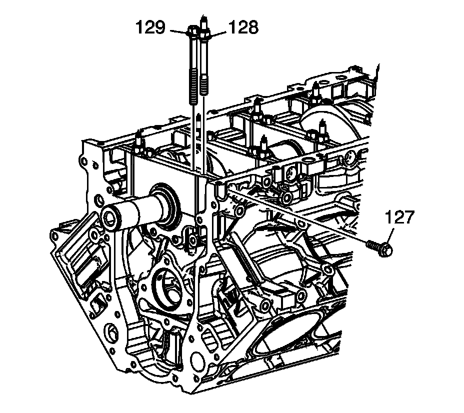
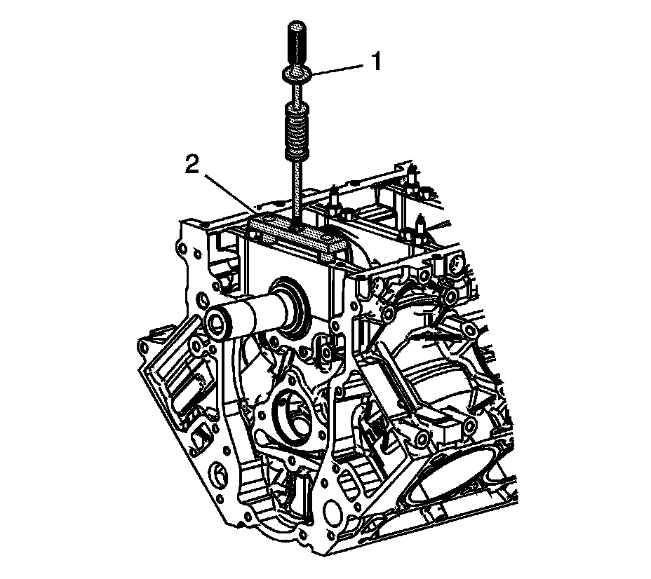
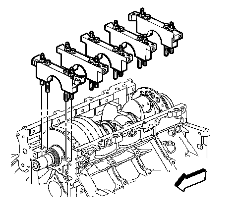
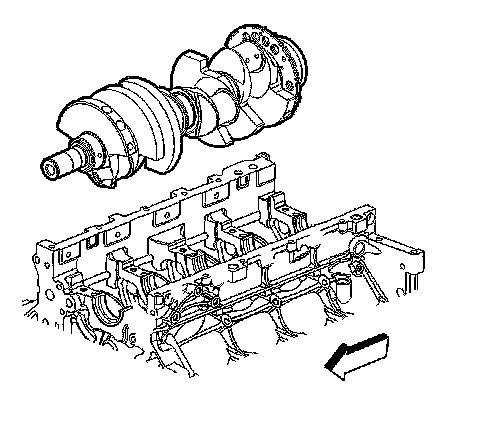
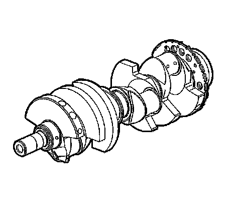
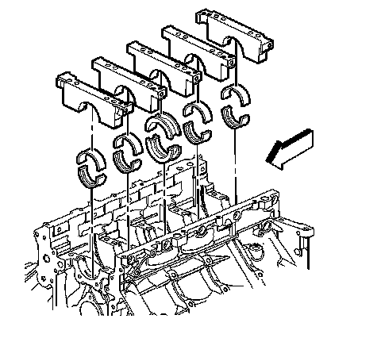

30. Crankshaft and Bearing Removal
Crankshaft and Bearings Removal
Tools Required
^ J 6125-1B Slide Hammer
^ J 41818 Crankshaft Bearing Cap Remover

Important:
^ The crankshaft bearing caps are machined with the engine block, for the proper clearances. Mark or identify each crankshaft bearing cap location and direction before removal. The crankshaft bearing caps MUST be installed to their original position and direction.
^ Do not use the bearing cap M8 side bolts again.
Remove the crankshaft position (CKP) sensor bolt (702).
1. Remove the CKP sensor (701).
2. Remove the O-ring (750) from the sensor, as required.

3. Remove the crankshaft bearing cap M8 bolts (127).
4. Remove the bearing cap M10 bolts (129) and studs (128).

Notice: Refer to Fastener Notice.
5. Install the J 41818 (2).
Tighten the J 41818 (2) bolts to 11 N.m (100 lb in).
6. Install the J 6125-1B (1) to the J 41818 (2) in order to remove the crankshaft bearing caps.

7. Remove the bearing caps.

8. Remove the crankshaft.

Important: Use care when handling the crankshaft. Avoid damage to the CKP sensor reluctor ring teeth. Nicks, burrs or other damage to the teeth may effect on-board diagnostics (OBD) II system performance.
9. Lay the crankshaft onto 2 wooden V-blocks or other protective surface.

10. Remove the crankshaft bearings from the bearing caps and the engine block.
11. Mark, sort, or organize the crankshaft bearings so they may be installed to their original position and location. Refer to Separating Parts.